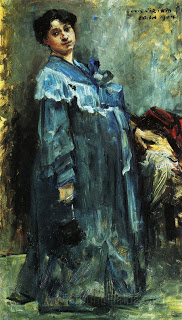

Zevachim 95 - Dirty Garment Left the Courtyard
If a garment stained with blood of a sin-offering left the Courtyard, it must be brought back and laundered in a holy place (the Courtyard). If it has meanwhile become ritually impure, it must be ripped to loose its impurity, then brought back and laundered.
Similar law applies to an earthenware utensil, except that if it becomes impure while outside, it cannot be broken - since breaking must be inside. Instead, one punctures a small hole in it, which makes it unusable and leads it to loose its impurity, then brings it into the Courtyard and breaks it there.
Resh Lakish asked a question - What happens if the robe of the High Priest was spattered with blood, taken outside the Courtyard, and there it became impure. The advice above cannot be applied, because it is forbidden to tear this robe . It needs to be brought inside and laundered there, but it is forbidden to do so, because it is impure. One is also not allowed to dip it in a mikva to remove its impurity - because that would be the beginning of washing, and washing can only be done inside the Courtyard. Readers are invited to submit their solutions .
Art: Lovis (Franz Heinrich Louis) Corinth - In a Silk Robe